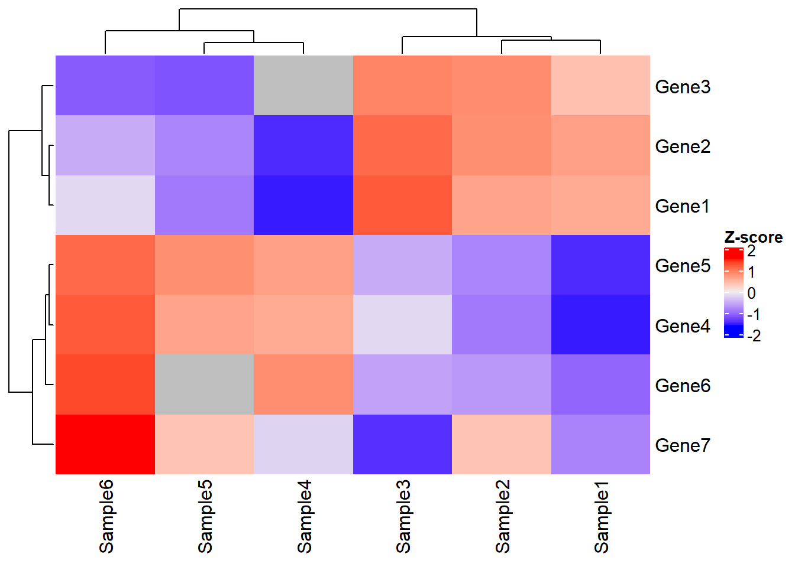

The Principle of R Package GSClassifier
2022-09-13
Chapter 1 Principle
1.1 Introduction
GSClassifier is an R package for modeling and identification of gene expression profiles (GEPs) subtypes. The detail of usage had been demonstrated in Github WiKi. Here, we propose to introduce the principle of GSClassifier, including flowchart, top scoring pairs (TSP) algorithm, and batch effect control.
1.2 Flowchart
The flowchart of GSClassifier is showed in Figure 1.1.
Figure 1.1: The flow chart of GSClassifier
1.3 Data Processing
For each dataset, the RNA expression matrix would be normalized (we called Raw Matrix in the flowchart) internally so that the expression data of the samples in the dataset were comparable.
Next, the subtypes of the samples in each dataset would be called based on cluster analysis. Specially, we figured out PAD subtypes, which belong to Subtype Vector in the flowchart, via hierarchical clustering analysis.
1.4 Top scoring pairs (TSP) matrix
With subtype vectors and Raw Matrix, the TSP matrix for a specified subtypes could be calculated via function GSClassifier::trainDataProc:
trainDataProc(
Xmat, Yvec,
geneSet,
subtype = 1,
# 0.2 was Used in PAD project
ptail = 0.2,
# c(0, 0.25, 0.5, 0.75, 1.0) was Used in PAD project
breakVec = c(0, 0.25, 0.5, 0.75, 1.0)
)The TSP matrix consists of 3 parts: binned expression matrix, top scoring of gene pairs, and gene set pairs.
Here, we would use some simulated data to introduce how TSP matrix calculated.
1.4.1 Simulated Dataset
Load packages:
# Install "devtools" package
if (!requireNamespace("devtools", quietly = TRUE))
install.packages("devtools")
# Install dependencies
if (!requireNamespace("luckyBase", quietly = TRUE))
devtools::install_github("huangwb8/luckyBase")
# Install the "GSClassifier" package
if (!requireNamespace("GSClassifier", quietly = TRUE))
devtools::install_github("huangwb8/GSClassifier")
# Install CRAN packages
if (!requireNamespace("pacman", quietly = TRUE)){
install.packages("pacman")
library(pacman)
} else {
library(pacman)
}
packages_needed <- c("readxl","ComplexHeatmap","GSClassifier")
for(i in packages_needed){p_load(char=i)}We simulated a dataset:
# Geneset
geneSet <- list(
Set1 = paste('Gene',1:3,sep = ''),
Set2 = paste('Gene',4:6,sep = '')
)
# RNA expression
x <- read_xlsx('./data/simulated-data.xlsx', sheet = 'RNA')New names:expr <- as.matrix(x[,-1])
rownames(expr) <- as.character(as.matrix(x[,1])); rm(x)
# Parameters
breakVec = c(0, 0.25, 0.5, 0.75, 1.0)
subtype_vector = c(1,1,1,2,2,2)
Ybin = ifelse(subtype_vector == 1, yes = 1, no=0)
# Report
cat(c('\n', 'Gene sets:', '\n'))
print(geneSet)
cat('RNA expression:', '\n')
print(expr)
Gene sets:
$Set1
[1] "Gene1" "Gene2" "Gene3"
$Set2
[1] "Gene4" "Gene5" "Gene6"
RNA expression:
Sample1 Sample2 Sample3 Sample4 Sample5 Sample6
Gene1 0.51 0.52 0.60 0.21 0.30 0.40
Gene2 0.52 0.54 0.58 0.22 0.31 0.35
Gene3 0.53 0.60 0.61 0.23 0.29 0.30
Gene4 0.21 0.30 0.40 0.51 0.52 0.60
Gene5 0.22 0.31 0.35 0.52 0.54 0.58
Gene6 0.23 0.29 0.30 0.53 0.60 0.61
Gene7 0.10 0.12 0.09 0.11 0.12 0.14Have a look at the matrix:
Heatmap(t(scale(t(expr))), name = "Z-score")
1.4.2 Binned expression
# Data of one sample
x <- expr[,1]
# Create quantiles
brks <- quantile(as.numeric(x),
probs=breakVec,
na.rm = T)
# Get interval orders
xbin <- .bincode(x = x,
breaks = brks,
include.lowest = T)
xbin <- as.numeric(xbin)
# Report
cat('Quantiles:', '\n'); print(brks)
cat('\n')
cat('Raw expression:', '\n');print(as.numeric(x))
cat('\n')
cat('Binned expression:', '\n'); print(xbin)Quantiles:
0% 25% 50% 75% 100%
0.100 0.215 0.230 0.515 0.530
Raw expression:
[1] 0.51 0.52 0.53 0.21 0.22 0.23 0.10
Binned expression:
[1] 3 4 4 1 2 2 1For example, 0.10 is the minimun of the raw expression vector, so its binned expression is 1. Similarly, the binned expression of maximum 0.53 is 4.
We calculated binned expression via function breakBin in GSClassifier:
expr_binned <- apply(
expr, 2,
GSClassifier:::breakBin,
breakVec)
rownames(expr_binned) <- rownames(expr)
print(expr_binned) Sample1 Sample2 Sample3 Sample4 Sample5 Sample6
Gene1 3 3 4 1 2 2
Gene2 4 4 3 2 2 2
Gene3 4 4 4 2 1 1
Gene4 1 2 2 3 3 4
Gene5 2 2 2 4 4 3
Gene6 2 1 1 4 4 4
Gene7 1 1 1 1 1 11.4.3 Genes with large rank differences
In this simulated dataset, Gene7 is a gene whose expression is always the lowest across all samples. In other words, the rank of Gene7 is stable or invariable across samples so that it’s not robust for identification of differentail subtypes.
Except binned expression, we also calculated gene-pair scores later. Due to the number of gene-pair is \(C_{2 \atop n}\), the removement of genes like Gene7 before modeling could really reduce the complexibility of the model and save computing resources. In all, genes like Gene7 could be dropped out in the following analysis.
First, We use base::rankto return the sample ranks of the values in a vector:
expr_binned_rank <- apply(
expr_binned,
2,
function(x)rank(x, na.last = TRUE)
)
print(expr_binned_rank) Sample1 Sample2 Sample3 Sample4 Sample5 Sample6
Gene1 5.0 5.0 6.5 1.5 3.5 3.5
Gene2 6.5 6.5 5.0 3.5 3.5 3.5
Gene3 6.5 6.5 6.5 3.5 1.5 1.5
Gene4 1.5 3.5 3.5 5.0 5.0 6.5
Gene5 3.5 3.5 3.5 6.5 6.5 5.0
Gene6 3.5 1.5 1.5 6.5 6.5 6.5
Gene7 1.5 1.5 1.5 1.5 1.5 1.5na.last = TRUE means that missing values in the data are put last.
Then, get rank differences of each gene based on specified subtype distribution (Ybin):
testRes <- sapply(
1:nrow(expr_binned_rank),
function(gi) testFun(as.numeric(expr_binned_rank[gi,]), Ybin)
)
names(testRes) <- rownames(expr_binned_rank)
print(testRes) Gene1 Gene2 Gene3 Gene4 Gene5 Gene6 Gene7
-2.666667 -2.500000 -4.333333 2.666667 2.500000 4.333333 0.000000 Gene7 is the one with the lowest absolute value (0) of rank diffrence.
In GSClassifier, we use ptail to select differential genes based on rank diffrences. Less ptail is, less gene kept. Here, we just set ptail=0.4:
# ptail is a numeber ranging (0,0.5].
ptail = 0.4
# Index of target genes with big rank differences
idx <- which((testRes < quantile(testRes, ptail, na.rm = T)) |
(testRes > quantile(testRes, 1.0-ptail, na.rm = T)))
# Target genes
gene_bigRank <- names(testRes)[idx]
# Report
cat('Index of target genes: ','\n');print(idx); cat('\n')
cat('Target genes:','\n');print(gene_bigRank); cat('\n')Index of target genes:
Gene1 Gene2 Gene3 Gene4 Gene5 Gene6
1 2 3 4 5 6
Target genes:
[1] "Gene1" "Gene2" "Gene3" "Gene4" "Gene5" "Gene6"Hence, Gene7 was filtered and excluded in the following analysis. In practice, both ptail and breakVec are hyperparameters in modeling.
1.4.4 Pair scores of top genes
In GSClassifier, we use function makeGenePairs to calculate s
gene_bigRank_pairs <- GSClassifier:::makeGenePairs(
gene_bigRank,
expr[gene_bigRank,])
print(gene_bigRank_pairs) Sample1 Sample2 Sample3 Sample4 Sample5 Sample6
Gene1:Gene2 0 0 1 0 0 1
Gene1:Gene3 0 0 0 0 1 1
Gene1:Gene4 1 1 1 0 0 0
Gene1:Gene5 1 1 1 0 0 0
Gene1:Gene6 1 1 1 0 0 0
Gene2:Gene3 0 0 0 0 1 1
Gene2:Gene4 1 1 1 0 0 0
Gene2:Gene5 1 1 1 0 0 0
Gene2:Gene6 1 1 1 0 0 0
Gene3:Gene4 1 1 1 0 0 0
Gene3:Gene5 1 1 1 0 0 0
Gene3:Gene6 1 1 1 0 0 0
Gene4:Gene5 0 0 1 0 0 1
Gene4:Gene6 0 1 1 0 0 0
Gene5:Gene6 0 1 1 0 0 0Take Gene1:Gene4 of Sample1 as an example. \(Expression_{Gene1} - Expression_{Gene4} = 0.51-0.21 = 0.3 > 0\), so the pair score is 1; if the difference is ≤0, the pair score is 0 instead.
1.4.5 Gene set difference score
In GSClassifier, we use function makeSetData to calculate gene set difference score:
geneset_interaction <- GSClassifier:::makeSetData(expr,geneSet)
print(geneset_interaction) Sample1 Sample2 Sample3 Sample4 Sample5 Sample6
s1s2 1 1 1 0 0 0